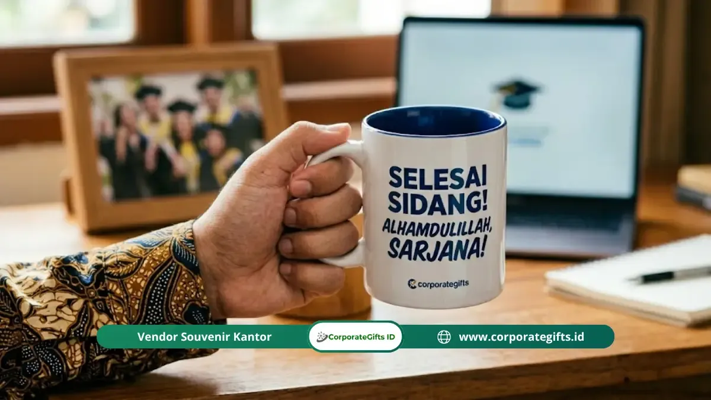

Corporate Gifts ID - Kado sidang skripsi personal adalah hadiah yang dipilih berdasarkan kepribadian, perjalanan, dan kenangan unik penerima, bukan sekadar barang populer dari rak toko. Empat pilihan yang paling sentimental adalah scrapbook handmade, mug atau tumbler custom, bingkai foto dengan kartu tulis tangan, serta kaos atau tote bag bertema skripsi. Kado semacam ini terasa menyentuh hati karena menunjukkan bahwa pemberi benar-benar meluangkan waktu untuk memikirkan penerima secara personal, bukan hanya mengikuti tren hadiah yang sedang populer.
Poin Kunci Kado Sidang Skripsi Sentimental:
- Validasi Perjuangan Nyata: Mengapresiasi malam-malam begadang, revisi panjang, dan keteguhan mental selama masa penelitian.
- Investasi Waktu dan Perhatian: Nilai emosional tertinggi lahir dari usaha pemberi (effort) daripada sekadar nominal harga barang.
- Momen Sekali Seumur Hidup: Cinderamata yang dirancang khusus menyimpan kenangan emosional yang bertahan puluhan tahun setelah lulus.
- 4 Kategori Unggulan: Album scrapbook handmade, tumbler stainless custom grafir nama/tanggal, bingkai foto tulis tangan, dan apparel custom.
Apa yang Dimaksud dengan Kado Sidang Skripsi Personal?
Kado personal adalah hadiah yang dirancang atau dipilih secara khusus berdasarkan identitas, perjalanan hidup, dan kenangan unik penerimanya. Kado personal bukan hanya soal mencantumkan nama penerima di atas kertas bungkus kado, melainkan lahir dari pertanyaan mendalam: "Benda apa yang benar-benar mewakili perjuangan dan pencapaian orang ini?"
Pemberi kado personal mengingat kembali momen-momen kebersamaan, keluh kesah saat bimbingan dosen, hingga mimpi karier setelah lulus. Sebaliknya, kado generik seperti seikat bunga atau cokelat supermarket memang menyenangkan, namun tidak menceritakan satu pun kisah spesifik tentang sang pejuang skripsi sebagai individu yang unik.
Mengapa Momen Sidang Skripsi Membutuhkan Kado yang Berbeda?
Sidang skripsi bukanlah ujian akademik biasa. Bagi mayoritas mahasiswa tingkat akhir di Indonesia, skripsi adalah pengalaman yang paling melelahkan sekaligus paling membanggakan selama masa studi. Momen sidang adalah garis finis dari ratusan jam revisi, analisis data yang rumit, dan tekanan mental yang kerap dipendam sendiri.
Artinya, kado yang diberikan saat momen kelulusan sidang memikul beban emosional yang jauh lebih dalam dibanding kado ulang tahun biasa. Hadiah yang secara eksplisit mengakui keletihan dan keberhasilan tersebut akan menjadi sumber haru yang sangat membekas di hati penerimanya.

Kombinasi hadiah kustomisasi grafir laser nama dan tanggal kelulusan yang fungsional untuk menyambut dunia kerja.
Psikologi Hadiah: Usaha Pemberi vs Nilai Finansial
Kajian dalam psikologi konsumen secara konsisten membuktikan fenomena giver-receiver perception: penerima menilai hadiah yang dirancang penuh perhatian memiliki nilai emosional jauh lebih tinggi dibandingkan barang mahal yang dibeli secara terburu-buru tanpa sentuhan personal.
Memori afektif manusia bekerja berdasarkan relevansi emosi, bukan angka pada struk belanja. Hadiah seperti tumbler custom grafir atau album foto tulisan tangan mampu menjadi jangkar memori yang tidak akan pernah dibuang, bahkan saat penerima telah berkeluarga atau meniti karier profesional bertahun-tahun kemudian.
Kesalahan Umum Saat Memilih Kado Sidang Skripsi
Beberapa kekeliruan yang kerap terjadi saat menyiapkan hadiah sidang bagi sahabat atau pasangan antara lain:
- Hanya Mengikuti Tren Viral: Membeli bucket snack atau selempang nama yang ramai di media sosial tanpa mempertimbangkan apakah penerima menyukainya.
- Kado Mahal Tanpa Makna: Memberikan barang bermerek mahal namun sama sekali tidak ada kaitannya dengan preferensi sang lulusan.
- Mengabaikan Kartu Ucapan: Mengandalkan kartu ucapan template bawaan toko tanpa menuliskan paragraf apresiasi yang tulus dari lubuk hati.
- Kurang Memperhatikan Aspek Kegunaan: Memberi barang yang hanya bagus difoto saat perayaan sidang, namun berakhir menjadi sampah pajangan di kamar kos.
4 Rekomendasi Pilihan Kado Sidang Skripsi Personal Terbaik
Berikut empat inspirasi cinderamata sidang skripsi yang menggabungkan nilai sentimental mendalam dan kepraktisan fungsional:
1. Scrapbook atau Album Foto Handmade
Pilihan paling sentimental yang merangkum dokumentasi foto masa awal kuliah, momen praktikum, hingga foto candid saat tertidur di perpustakaan bersama pesan singkat dari sahabat seperjuangan.
2. Tumbler Stainless Custom Grafir Nama & Gelar Baru
Pilihan paling fungsional karena penerima akan membawanya setiap hari saat bekerja atau lanjut studi S2. Grafir nama lengkap bersanding gelar sarjana baru dan tanggal kelulusan memberikan suntikan rasa bangga setiap kali mereka meneguk air.
3. Bingkai Foto Meja dengan Surat Apresiasi Tulis Tangan
Menyatukan memori visual dengan kata-kata jujur yang menceritakan betapa bangganya Anda menyaksikan keteguhan mereka menyelesaikan tugas akhir.
4. Tote Bag / Custom Apparel Bertema Riset Skripsi + Parfum Favorit
Menggabungkan identitas akademik dengan indra penciuman melalui parfum aroma favorit penerima yang secara neurologis merupakan pemicu ingatan kenangan paling kuat.
Tabel Komparasi Pilihan Kado Sidang Skripsi
Tabel berikut merangkum karakteristik masing-masing opsi hadiah untuk mempermudah Anda menentukan pilihan sesuai waktu dan anggaran:
| Jenis Kado Sidang | Tingkat Sentimental | Kegunaan Sehari-hari | Estimasi Budget | Waktu Persiapan |
|---|---|---|---|---|
| Scrapbook Album Handmade | Sangat Tinggi (Penuh Kenangan) | Pajangan & Memori Koleksi | Ekonomis - Sedang | 3 - 7 Hari (Perlu Waktu Cetak & Rangkai) |
| Tumbler Stainless Grafir Laser | Tinggi (Nama & Gelar Sarjana) | Sangat Tinggi (Dipakai Harian) | Terjangkau - Menengah | 1 - 3 Hari (Produksi Cepat) |
| Bingkai Foto + Surat Tulis Tangan | Sangat Tinggi (Menyentuh Hati) | Dekorasi Meja Kamar / Kantor | Sangat Hemat | 1 Hari |
| Apparel Custom + Parfum Favorit | Menengah - Tinggi | Tinggi (Pakaian & Wewangian) | Menengah | 2 - 4 Hari |
Cara Menyesuaikan Kado dengan Kepribadian Penerima
Agar kado yang Anda berikan tepat sasaran, luangkan waktu menjawab tiga pertanyaan panduan berikut:
- Apa yang Paling Sering Mereka Ceritakan? Jika mereka sering mengeluhkan revisi yang berat, scrapbook penuh canda tawa akan menghapus keletihan tersebut.
- Apa Hobi dan Rutinitas Harian Mereka? Jika mereka penikmat kopi atau teh yang bersiap masuk dunia kerja kantoran, tumbler vacuum SUS 304 berlogo inisial adalah hadiah yang sempurna.
- Bagaimana Tipe Bahasa Kasih (Love Language) Mereka? Jika mereka menyukai kata-kata apresiasi (words of affirmation), surat tulisan tangan yang jujur akan bernilai jutaan kali lipat dibanding benda fisik semata.
Ingin menyiapkan cinderamata kelulusan eksklusif atau paket merchandise wisuda kustom untuk fakultas dan angkatan kampus Anda? Kunjungi katalog resmi CorporateGifts.ID atau konsultasikan pengadaan gift set melalui form permintaan penawaran harga sekarang juga.